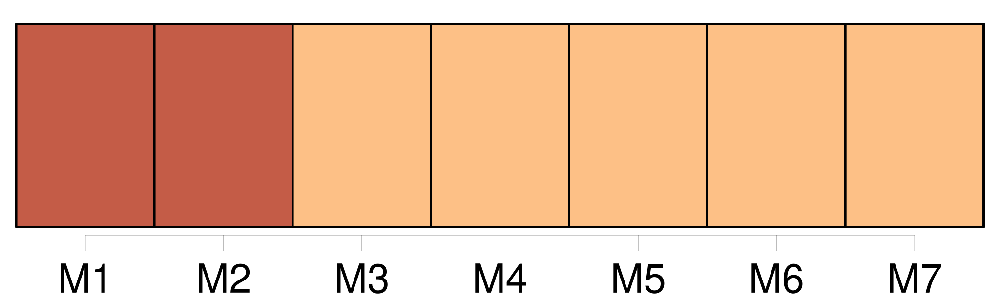
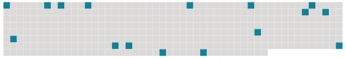

Longueur nb maillons : 16 mentions |
  |
[Notre] mépris commun pour ceux de [notre] âge [nous] rapprochait encore. [Nous] seuls, nous jugions capables de comprendre les choses ; et, enfin, [nous] seuls, nous trouvions dignes des femmes. [Nous] nous croyions des hommes. Par chance, [nous] n'allions pas être séparés. [2 phrases] Ainsi [nous] serions toujours [ensemble] [5 phrases]
[Nos] communes avances raccourcirent de moitié la route que l'orgueil de chacun de [nous] avait à faire. [1 phrases]
Avec lui tout me devenait plaisir, et moi qui, seul, ne pouvais avancer d'un pas, j'aimais faire à pied, deux fois par jour, le trajet qui sépare Henri Iv de la gare de la Bastille, où [nous] prenions [notre] train.
Trois ans passèrent ainsi, sans autre amitié et sans autre espoir que les polissonneries du jeudi – avec les petites filles que les parents de mon ami [nous] fournissaient innocemment, invitant ensemble à goûter les amis de leur fils et les amies de leur fille –, menues faveurs que [nous] dérobions, et qu'elles [nous] dérobaient, sous prétexte de jeux à gages. |
 |
La ressource peut être téléchargée sur la page Ortolang
Si vous avez des questions ou vous voyez des erreurs, merci d'envoyer un mail à silvia.federzoni89@gmail.com
Site développé par S. Federzoni (contact)